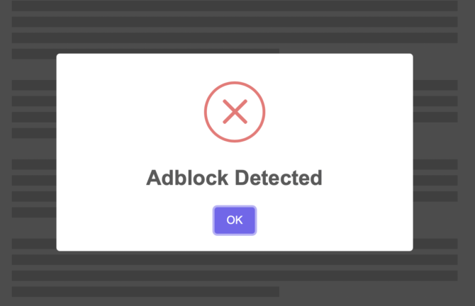
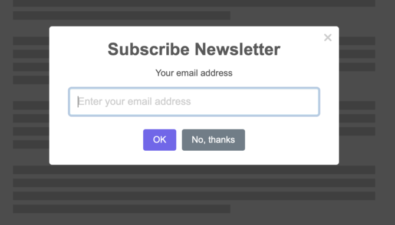

Китайский разработчик Ли Гуанъи запустил сайт «Мой опыт в интернете сегодня». В нём он собрал все неудобные элементы пользования веб-страницами, чтобы показать, через что приходится каждый раз проходить пользователю.
Как только пользователи заходит на сайт, его начинают донимать уведомлениями о куки, предложением включить уведомления или оставить электронную почту, просьбой выключить AdBlock и так далее.
 
Спустя десяток закрытых всплывающих уведомлений открывается статья, но и тут пользователя ждёт разочарование. Сайт забит рекламными блоками, окном чата с техподдержкой и так далее.